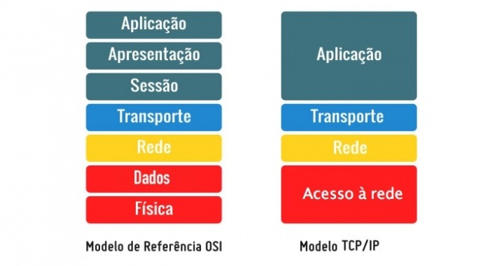
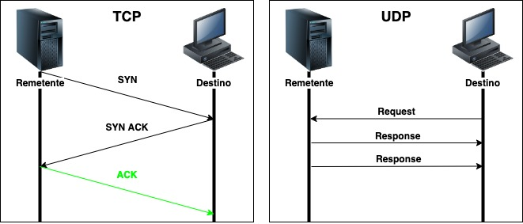

OSI

O modelo de interconexão de sistemas abertos (OSI) é um modelo conceitual criado pela Organização Internacional de Normalização dividido em camadas de funções, criado em 1971 e formalizado em 1983, com objetivo de ser um padrão, para protocolos de comunicação entre os mais diversos sistemas em uma rede local, garantindo a comunicação entre dois sistemas computacionais.
TCP/IP
O TCP/IP é fundamental para a rede de internet. Esses dois protocolos garantem que pacotes de informações cheguem a seu destino de forma correta e segura. Quando falamos de TCP, nos referimos a algo que faz toda a definição de como aplicações conseguem criar canais de comunicação através da rede. Também auxilia na quebra em pedaços de uma mensagem que será posteriormente reconstruída antes de chegar a seu destino. Sem a presença desse conjunto, seria impossível definir os padrões de transmissão, que são adotados por diferentes dispositivos das mais variadas aplicações. Resumindo: você só consegue logar de forma correta por causa do TCP/IP.
UDP
O Protocolo UDP é um protocolo de comunicação utilizado em toda a internet para transmissões com validade especialmente limitada, tais como reproduções de vídeo ou pesquisas no DNS. Ele acelera as comunicações ao não estabelecer formalmente uma conexão antes que os dados sejam transferidos. Isso permite que os dados sejam transferidos muito rapidamente, mas também pode fazer com que pacotes se percam em trânsito além de criar oportunidades de exploração na forma de ataques DDoS.
DNS

Os servidores DNS (Domain Name System, ou Sistema de Nomes de Domínios) são os responsáveis por localizar e traduzir para números IP (Internet Protocol) os endereços dos sites que digitamos nos navegadores. Como funciona: Os servidores DNS são capazes de converter as solicitações da URL em endereços de IP. Mais especificamente, eles controlam quais servidores os usuários podem acessar ao digitar um nome de domínio no browser. cada domínio possui um único endereço de IP e que também não há a possibilidade de sites diferentes possuírem a mesma URL. No entanto, diferentes URLs podem jogar os usuários para o mesmo site — desde que sejam do mesmo proprietário.
DHCP

O protocolo DHCP é um protocolo de cliente/servidor que fornece automaticamente um host IP (Protocolo de Internet) com seu endereço IP e outras informações de configuração relacionadas, como a máscara de sub-rede e o gateway padrão. O DHCP permite que os hosts obtenham as informações de configuração TCP/IP necessárias de um servidor DHCP.
FTP

O FTP (File Transfer Protocol) ou Protocolo de Transferência de Arquivos, em português, é um protocolo usado para transferir arquivos por uma rede de computadores, desde uma local à internet. Basicamente, permite a troca de arquivos entre dois computadores de modo direto, em que um ganha acesso às pastas do outro.
HTTP/HTTPS
HTTPS é uma implementação do protocolo HTTP sobre uma camada adicional de segurança que utiliza o protocolo TLS/SSL. Essa camada adicional permite que os dados sejam transmitidos por meio de uma conexão criptografada e que se verifique a autenticidade do servidor e do cliente por meio de certificados digitais.
WEBSERVER

Um web server é um sistema computacional que hospeda e fornece acesso aos conteúdos e aplicações através da internet. Geralmente contratado como um serviço, esse servidor recebe e processa as solicitações feitas por navegadores através de protocolos de rede como o HTTP ou HTTPS.
SITE HOSPEDADO

Essa foto é concretização de um projeto realizado em sala,não tenho muita propiedade pra falar sobre os temas que são propostos mas até que gostei do resultado final do meu trabalho.